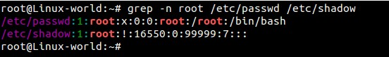

所有的类linux系统都会提供一个名为grep(global regular expression print，全局正则表达式输出)的搜索工具。grep命令在对一个或多个文件的内容进行基于模式的搜索的情况下是非常有用的。模式可以是单个字符、多个字符、单个单词、或者是一个句子。
当命令匹配到执行命令时指定的模式时，grep会将包含模式的一行输出，但是并不对原文件内容进行修改。
grep是Linux命令行下常用于查找过滤文本文件内容的命令。最简单的用法是：
grep apple fruitlist.txt如果想忽略大小写，可以用-i参数：
grep -i apple fruitlist.txt如果想搜索目录里所有文件，包括子目录的话，并且在结果中显示行号，可以用以下命令：
grep -nr apple *grep的语法支持正则表达式，正则表达式有些复杂，以后再讲解。下面是一些有用的参数：
- -A num, --after-context=num: 在结果中同时输出匹配行之后的num行
- -B num, --before-context=num: 在结果中同时输出匹配行之前的num行，有时候我们需要显示几行上下文。
- -i, --ignore-case: 忽略大小写
- -n, --line-number: 显示行号
- -R, -r, --recursive: 递归搜索子目录
- -v, --invert-match: 输出没有匹配的行
grep apple fruitlist.txt | grep -v pineapple如果我们想把搜索结果保存起来，那么可以把命令的标准输出重定向到文件：
grep apple fruitlist.txt | grep -v pineapple > apples.txt
在本文中，我们将会讨论到14个grep命令的例子。
例1 在文件中查找模式（单词）
在/etc/passwd文件中查找单词“linuxtechi”
root@Linux-world:~# grep linuxtechi /etc/passwdlinuxtechi:x:1000:1000:linuxtechi,,,:/home/linuxtechi:/bin/bashroot@Linux-world:~#
例2 在多个文件中查找模式。
root@Linux-world:~# grep linuxtechi /etc/passwd /etc/shadow /etc/gshadow/etc/passwd:linuxtechi:x:1000:1000:linuxtechi,,,:/home/linuxtechi:/bin/bash/etc/shadow:linuxtechi:$6$DdgXjxlM$4flz4JRvefvKp0DG6re:16550:0:99999:7:::/etc/gshadow:adm:*::syslog,linuxtechi/etc/gshadow:cdrom:*::linuxtechi/etc/gshadow:sudo:*::linuxtechi/etc/gshadow:dip:*::linuxtechi/etc/gshadow:plugdev:*::linuxtechi/etc/gshadow:lpadmin:!::linuxtechi/etc/gshadow:linuxtechi:!::/etc/gshadow:sambashare:!::linuxtechiroot@Linux-world:~#
例3 使用-l参数列出包含指定模式的文件的文件名。
root@Linux-world:~# grep -l linuxtechi /etc/passwd /etc/shadow /etc/fstab /etc/mtab/etc/passwd/etc/shadowroot@Linux-world:~#
例4 使用-n参数，在文件中查找指定模式并显示匹配行的行号
root@Linux-world:~# grep -n linuxtechi /etc/passwd39:linuxtechi:x:1000:1000:linuxtechi,,,:/home/linuxtechi:/bin/bashroot@Linux-world:~#
root@Linux-world:~# grep -n root /etc/passwd /etc/shadow

例5 使用-v参数输出不包含指定模式的行
输出/etc/passwd文件中所有不含单词“linuxtechi”的行
root@Linux-world:~# grep -v linuxtechi /etc/passwd

例6 使用 ^ 符号输出所有以某指定模式开头的行
Bash脚本将 ^ 符号视作特殊字符，用于指定一行或者一个单词的开始。例如输出/etc/passes文件中所有以“root”开头的行
root@Linux-world:~# grep ^root /etc/passwdroot:x:0:0:root:/root:/bin/bashroot@Linux-world:~#
例7 使用 $ 符号输出所有以指定模式结尾的行。
输出/etc/passwd文件中所有以“bash”结尾的行。
root@Linux-world:~# grep bash$ /etc/passwdroot:x:0:0:root:/root:/bin/bashlinuxtechi:x:1000:1000:linuxtechi,,,:/home/linuxtechi:/bin/bashroot@Linux-world:~#
Bash脚本将美元($)符号视作特殊字符，用于指定一行或者一个单词的结尾。
例8 使用 -r 参数递归地查找特定模式
root@Linux-world:~# grep -r linuxtechi /etc//etc/subuid:linuxtechi:100000:65536/etc/group:adm:x:4:syslog,linuxtechi/etc/group:cdrom:x:24:linuxtechi/etc/group:sudo:x:27:linuxtechi/etc/group:dip:x:30:linuxtechi/etc/group:plugdev:x:46:linuxtechi/etc/group:lpadmin:x:115:linuxtechi/etc/group:linuxtechi:x:1000:/etc/group:sambashare:x:131:linuxtechi/etc/passwd-:linuxtechi:x:1000:1000:linuxtechi,,,:/home/linuxtechi:/bin/bash/etc/passwd:linuxtechi:x:1000:1000:linuxtechi,,,:/home/linuxtechi:/bin/bash............................................................................
上面的命令将会递归的在/etc目录中查找“linuxtechi”单词
例9 使用 grep 查找文件中所有的空行
root@Linux-world:~# grep ^$ /etc/shadowroot@Linux-world:~#
由于/etc/shadow文件中没有空行，所以没有任何输出
例10 使用 -i 参数查找模式
grep命令的-i参数在查找时忽略字符的大小写。
我们来看一个例子，在paswd文件中查找“LinuxTechi”单词。
nextstep4it@localhost:~$ grep -i LinuxTechi /etc/passwdlinuxtechi:x:1001:1001::/home/linuxtechi:/bin/bashnextstep4it@localhost:~$
例11 使用 -e 参数查找多个模式
例如，我想在一条grep命令中查找‘linuxtechi’和‘root’单词，使用-e参数，我们可以查找多个模式。
root@Linux-world:~# grep -e "linuxtechi" -e "root" /etc/passwdroot:x:0:0:root:/root:/bin/bashlinuxtechi:x:1000:1000:linuxtechi,,,:/home/linuxtechi:/bin/bashroot@Linux-world:~#
例12 使用 -f 用文件指定待查找的模式
首先，在当前目录中创建一个搜索模式文件“grep_pattern”，我想文件中输入的如下内容。
root@Linux-world:~# cat grep_pattern^linuxtechirootfalse$root@Linux-world:~#
现在，试试使用grep_pattern文件进行搜索
root@Linux-world:~# grep -f grep_pattern /etc/passwd

例13 使用 -c 参数计算模式匹配到的数量
继续上面例子，我们在grep命令中使用-c命令计算匹配指定模式的数量
root@Linux-world:~# grep -c -f grep_pattern /etc/passwd22root@Linux-world:~#
例14 输出匹配指定模式行的前或者后面N行
a)使用-B参数输出匹配行的前4行
root@Linux-world:~# grep -B 4 "games" /etc/passwd

b)使用-A参数输出匹配行的后4行
root@Linux-world:~# grep -A 4 "games" /etc/passwd

c)使用-C参数输出匹配行的前后各4行
root@Linux-world:~# grep -C 4 "games" /etc/passwd